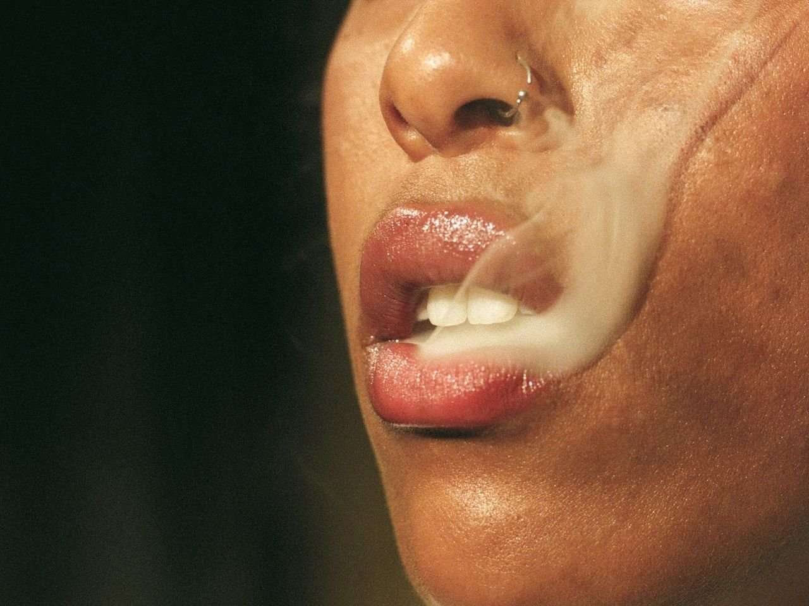

This is Your Skin On Weed

With the upcoming international holiday for weed enthusiasts coming up (4/20), now’s the perfect time to dive deep on the effects of marijuana on the skin. Everybody smokes weed or enjoys a little edible here and there. This post isn’t here to shame or bash in anyway. But over the years, science has discovered some pretty interesting connections between the effects of cannabis and the skin. One area that deserves attention is the potential impact cannabis consumption could have on your skin—particularly regarding conditions like acne. As your resident Fairy Glow Mother, I’d be remiss not to tell you about it.
Before you get too concerned reading this post, it's important to note that while some research supports links between marijuana and skin issues, there haven't yet been robust, peer-reviewed studies specifically examining this relationship. Both cannabis effects and skin health have been studied extensively as separate topics. However, more research (and funding!) is needed to develop more conclusive findings about how they interact with each other. So consider everything below as… cautionary advice.
Smoking Weed: the Real Cause of Hormonal Acne?
The relationship between cannabis and skin health isn't straightforward. Cannabis doesn't directly cause skin problems, but research suggests it may influence hormonal systems that regulate skin health. As you’ve learned from our previous post, acne itself is largely influenced by our hormones. Cannabis, particularly THC (tetrahydrocannabinol), interacts with the body's endocannabinoid system, which plays a role in regulating hormone production. Smoking (or ingesting) marijuana can disrupt this process particularly as it relates to androgens, cortisol, and thyroid hormones. BTW, Harvard considers the endocannabinoid system to be the most important system in the body!
Androgens: Research indicates that cannabis use can affect levels of androgens (male hormones) like testosterone. In women, elevated androgens are strongly linked to acne development, as they can increase oil production in skin glands.
Cortisol: THC has been shown to increase cortisol (the stress hormone) levels after use. For occasional users, this spike can trigger anxiety and blood pressure increases, while long-term users may experience blunted natural cortisol responses.
Thyroid Hormones: Some studies suggest cannabis may decrease levels of thyroid hormones T3 and T4, potentially leading to symptoms like fatigue, weight gain, and skin changes.
And just when you thought our bodies couldn’t get more complex, some studies are already pointing out the differences in cannabis effects between male and female sex!
Women & Weed
Since a lot of my clients are women, it feels necessary to point out the differences in how weed consumption affects their glow goals. And—if you’re like a lot of my clients—I want you to pay close attention if you also have poly-cystic ovarian syndrome (PCOS). PCOS is a common hormonal disorder affecting up to 20% of women of reproductive age worldwide, approximately. Women with PCOS already experience hormonal imbalances that can cause skin issues, particularly acne. But here’s how cannabis consumption may make things worse.
Hormonal Impacts: Cannabis may influence androgen levels, potentially exacerbating hormonal imbalances that already affect women with PCOS.
Insulin Sensitivity: Many women with PCOS struggle with insulin resistance. Some preliminary research suggests cannabinoids might affect insulin sensitivity, though more studies are needed.
Inflammation: While CBD has anti-inflammatory properties that could theoretically help with PCOS-related inflammation, smoking cannabis may trigger inflammatory responses that worsen skin conditions.
ECS Regulation: Some researchers hypothesize that careful regulation of the ECS through controlled cannabinoid therapy might help rebalance hormonal systems in PCOS, but clinical evidence is currently limited.
Men on Marijuana
While cannabis can affect skin health regardless of sex, men may experience particular effects due to their naturally higher testosterone levels and different skin characteristics. Men who already have acne-prone skin may be more vulnerable to these effects, particularly if they consume cannabis through smoking rather than other methods. Here are some common concerns regarding marijuana use as it relates to skin health in men:
Smoke Irritation: The physical act of smoking cannabis creates irritants that can worsen existing skin conditions. Men who smoke cannabis regularly may notice longer healing times for acne and increased inflammation around existing lesions.
Testosterone Fluctuations: Research shows conflicting results regarding cannabis effects on testosterone. Some studies suggest cannabis temporarily increases testosterone levels in men, which could potentially increase sebum production and worsen acne.
Lifestyle Factors: The behavioral changes associated with cannabis use, such as altered skincare routines, dietary changes, and sleep disruptions, may have stronger impacts on men who typically have shorter skincare routines to begin with.
Tips for Glowing while you’re Smoking
Pay attention to your individual response: Monitor your skin for changes after cannabis use.
Consider consumption methods: Smoking introduces combustion byproducts that may affect skin differently than edibles.
Maintain good skincare habits: Regular cleansing, appropriate moisturizing, and other skin care practices remain important.
Stay hydrated: Cannabis can cause dry mouth and potentially affect overall hydration, which impacts skin health.
Consider CBD-dominant products: If you're experiencing skin issues, products with higher CBD and lower THC might offer anti-inflammatory benefits with fewer hormonal effects.
Speaking Bluntly
Research on cannabis and skin health is still developing. Most studies on hormonal effects have small sample sizes or focus primarily on male subjects. As cannabis becomes more widely accepted and researched, we'll likely gain better understanding of its specific impacts on skin health across different populations.
For those using cannabis medicinally, it's worth discussing potential skin effects with healthcare providers who can help balance the benefits against any drawbacks.
Remember that individual responses vary greatly, and what triggers skin issues for one person may have no effect on another. Paying attention to your unique response is the best way to determine how cannabis affects your skin health.